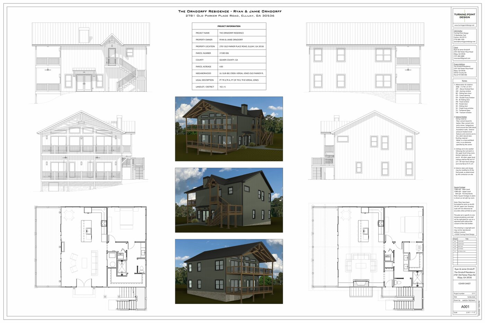

Project Information
- Property Owner: Ryan & Jamie Orndorff
- Location: 2781 Old Parker Place Road, Ellijay, GA 30536
- Parcel: 3159D 006 | Gilmer County, GA | 4.85 Acres
- Square Footage: 1,088 sqft Main Level | 1,088 sqft Upper Level | 664 sqft Porches/Decks